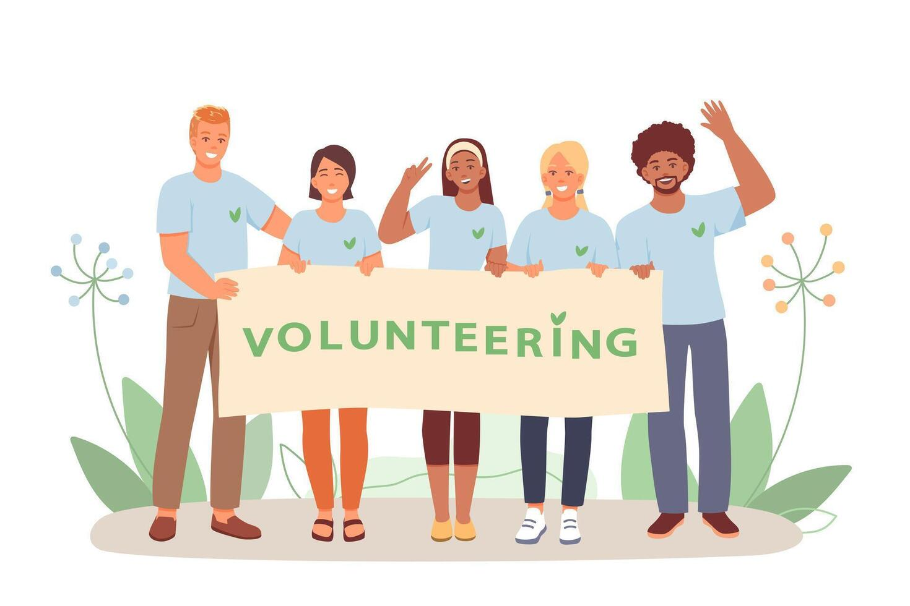

About BrightPath
BrightPath was established to uplift disadvantaged communities through education and empowerment programmes. We believe that every person deserves an equal opportunity to thrive.
Who We Are

A society where every young person has access to the support and resources needed for success — regardless of their background or circumstances. We envision thriving communities where talent is never wasted due to lack of opportunity.

BrightPath was founded in 2018 by a group of educators and social workers who saw first-hand how lack of resources was limiting young people's potential. Starting with just a homework club and 12 students, we have grown to serve over 1,200 youth and families each year across multiple programmes.

- Dignity — Every person is treated with respect and compassion.
- Equity — We address the root causes of inequality.
- Community — We work with, not just for, our communities.
- Excellence — We hold ourselves to the highest standards of impact.
Meet the Team

Our dedicated staff and volunteers work tirelessly to create meaningful and lasting impact.
Nomsa Mthembu
Executive Director
Themba Nkosi
Programme Manager
Lerato Molefe
Wellness Coordinator
Sipho Dlamini
Youth Skills Trainer
Frequently Asked Questions
Our programmes are open to youth aged 8–30 and families living in disadvantaged communities in and around Soweto, Johannesburg. Some online programmes are open nationally. All services are free of charge.
We are funded through a combination of individual donations, corporate sponsorships, government grants and fundraising events. Every rand raised goes directly to community programmes — we are a registered non-profit organisation.
Yes! We welcome remote volunteers for online tutoring, graphic design, social media, grant writing and more. Fill in our volunteer registration form and indicate your preference for remote work.
Visit our Programmes page to see what is currently available. You can register by calling us on +27 11 555 1234 or emailing info@brightpath.org.za.